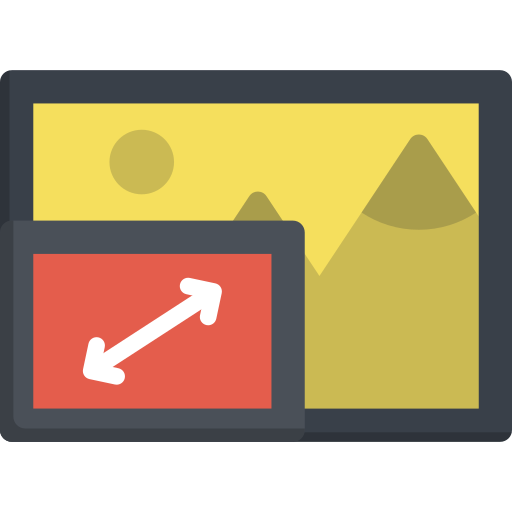

|
Press To Start/Stop Monitoring the Screen. |
|
Press To Capture Screen. |
| Type Notes for the Current Screen. | |
|  | Press To View Screen in Picture-In-Picture(Small Screen) Mode. |
| Click Pause Button in Picture in Picture Screen(Small Screen) To Capture the Screen. | |
|
Press to Download and Save the Cuptured Screens. |